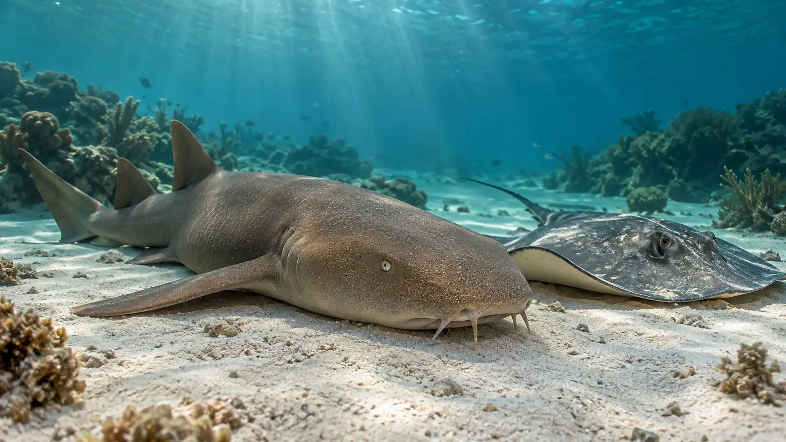
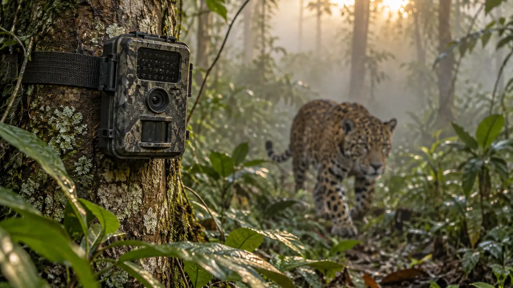
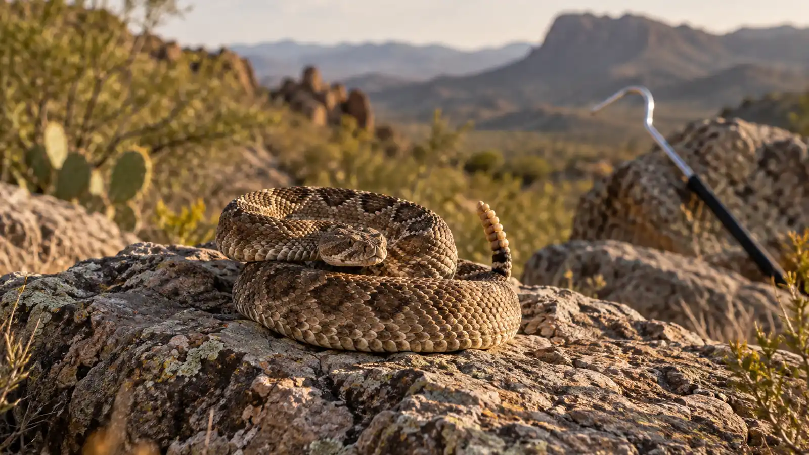
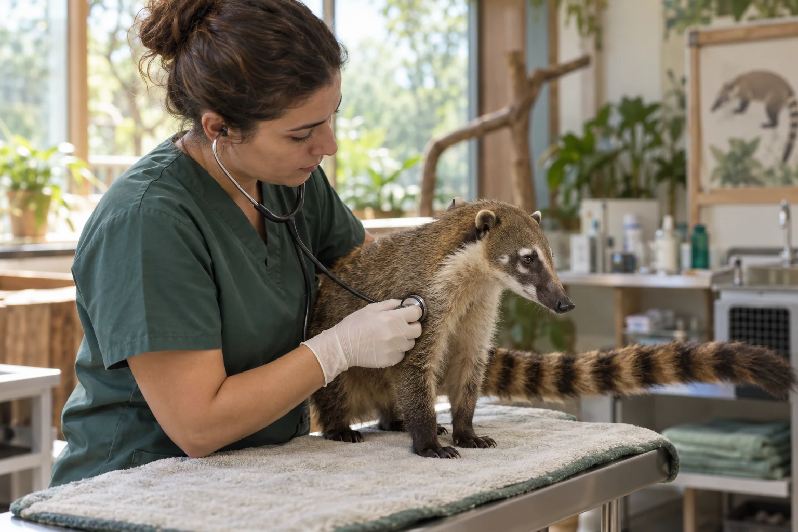

Ya tienes tu espacio en Zoorigen. El siguiente paso es elegir tu curso de prueba.
✓ Acceso personal listo
ZOORIGEN
Elige tu curso de prueba
Explora un tema que te interese.

Tiburones y rayasFauna y conservación↗

FototrampeoMonitoreo de mamíferos✓

Fauna ponzoñosaIdentificación y manejo↗
✓ Tu curso de prueba está listo
Crea tu cuenta con tus datos.
Datos de ejemplo
0Cursos especializados
0Áreas de capacitación
0Alumnos graduados

✦Conocer para cuidar.Fauna · Ciencia · Conservación
Imagen ilustrativa de atención veterinaria de fauna silvestre.
Conoce Zoorigen
Quiénes somos
Somos Zoorigen: un espacio de formación especializada en fauna silvestre, biodiversidad y manejo animal. Acercamos la ciencia a quienes quieren comprender y cuidar la vida silvestre.
Explora los tres pilares de nuestra formación.
01Entender la ciencia+
Capacitación en conservación, comportamiento, investigación y manejo animal para estudiantes y profesionistas.
02Priorizar el bienestar+
Aprender a observar y comprender a los animales es parte de un manejo responsable y respetuoso.
03Aprender a tu ritmo+
Consulta los cursos desde tu celular, tablet o computadora y organiza tu aprendizaje alrededor de tus intereses.
Los cursos de Zoorigen incluyen certificado con folio y código QR. Consulta los requisitos de conclusión del curso elegido y conserva una constancia de tu formación.
01Folio individualIdentifica tu constancia.
02Verificación con QRConsulta la información del certificado.
03Formación acreditadaAl cumplir los requisitos del curso.
Imágenes ilustrativas de los temas que puedes explorar en Zoorigen.
Reseñas
Lo que dice nuestra comunidad
Opiniones publicadas en nuestra página de Facebook.
Facebook
Cumplen con cada aspecto de los cursos, son muy confiables. Yo tomé un curso de arácnidos con el profe Nicolás Soria y explica muy bien, es muy atento y amable. Es muy fácil acceder a el curso y las diapositivas son muy claras y educativas. Sí volvería a tomar otro curso en Zoorigen
Facebook
Cursos en vivo, resuelven todas tus dudas. Es un curso completo, definitivamente lo recomiendo al 100
Facebook
Excelente servicio, personal muy amable, aprendí mucho en estos cursos, y los recomiendo en su totalidad, 100% garantizado el aprendizaje.
Facebook
Me encantaron estos cursos, los súper recomiendo en su totalidad!!
Facebook
me encantó tomar un curso con ellos aclaran al 100% todas tus dudas
Facebook
Muy buenos cursos, la información te imparten es relevante, además sus ponentes son muy buenos explicando,
Reunimos lo que más nos preguntan antes de crear una cuenta. Si no encuentras tu respuesta, te ayudamos.
01¿Necesito experiencia previa?
Depende de la capacitación. Revisa el temario y el perfil recomendado de cada curso; si tienes dudas, nuestro equipo te ayuda a elegir.
02¿Cómo funciona el curso de prueba?
Crea tu cuenta gratis y elige un curso. La prueba permite ver sus clases excepto la última. Solo puedes elegir un curso de prueba y no se puede cambiar después de confirmarlo dentro de tu cuenta.
03¿Puedo estudiar desde mi celular?
Sí. Puedes consultar el club desde celular, tablet o computadora con conexión a internet.
04¿Cómo obtengo mi certificado?
Revisa los requisitos de conclusión del curso y completa las actividades que correspondan. El certificado incluye folio y código QR.
05¿La encuesta me inscribe automáticamente?
No. Te orienta y recomienda opciones; tú eliges el curso y confirmas tu decisión al crear o ingresar a tu cuenta.
06¿Dónde consulto el aviso de privacidad y los términos?